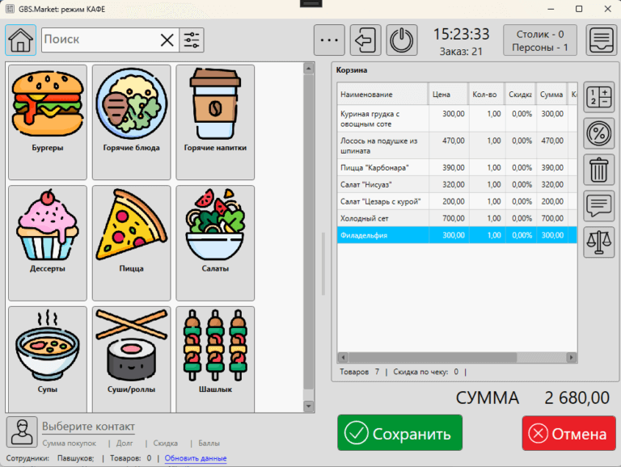

В этой статье перечислим те действия, которые необходимы для подготовки и запуска кассовой программы GBS.Market в работу. Инструкция предназначена для тех, кто впервые знакомится с программой.
Вступление
В процессе разработки мы стараемся сделать программу максимально понятной и простой. Но часть возможностей или настроек могут быть технически сложными. Если что-то из описанного в наших инструкциях покажется сложным, вы можете:
- обратиться в службу поддержки и получить ответы на возникшие вопросы
- заказать платную удаленную настройку без необходимости вникать в сложные технические нюансы
Перед обращением в службу поддержки советуем прочитать рекомендации для более быстрого получения ответа.
В любом случае мы настоятельно рекомендуем ознакомиться с данной статьей, чтобы понимать принципы работы GBS.Market.
Знакомство с возможностями программы
Информация о доступных возможностях программы доступна в следующих материалах:
- Возможности программы
- FAQ: что умеет GBS.Market
- Оборудование, совместимое с программой
Установка и первый запуск программы
Установка программы
GBS.Market – это настольное приложение, т.е. программа, которая работает на вашем устройстве (компьютер, ноутбук и т.п.).
Порядок установки:
- Перед тем, как скачать программу убедитесь, что устройство входит в перечень и соответствует системным требованиям.
- Если программа совместима, перейдите на страницу загрузки, чтобы скачать ее.
- Следуйте инструкции по установке программы
Настройте ваш антивирус
Важная информация
Если на вашем компьютере используется антивирус – мы рекомендуем добавить GBS.Market в список исключений для избежания ситуаций, когда антивирус блокирует доступ к программе.
Такие случаи возникают редко – в нашей программе нет вредоносного кода. Но, как показывает практика, иногда антивирусные базы могут содержать ошибки и программа может быть заблокирована ошибочно.
Запуск и первичная настройка
При первом запуске необходимо выполнить начальную настройку. Если вы только знакомитесь с программой, рекомендуем установить ее в одном из двух режимов:
- магазин/склад
- кафе
т.к. третий режим "дом/офис" стоит изучать только после ознакомления с основными режимами и настройке работы в реальной торговой точке.
Доступные режимы работы описаны в статье. Процесс первичной настройки описан здесь.
Ознакомьтесь с интерфейсом
После первичной настройки вы попадете на форму входа, где необходимо пройти авторизацию, введя пароль, указанный при первичной настройке.
Если вы забудете пароль – следуйте инструкции по восстановлению.
После авторизации вы увидите одну из основных форм (рабочих мест) программы, в зависимости от режима работы.
Режим "Магазин/склад"
Если вы выбрали режим работы "Магазин/склад", то вы увидите окно продаж. С описанием этой формы можно ознакомиться в инструкции.
Внешний вид главного окна программы
Режим "Кафе"
Если программа запущена в режиме "Кафе", то откроется основная форма этого режима.
Внешний вид основного окна режима "Кафе"
В этом режиме мы рекомендуем выполнить выход в окно продаж, из которого происходит настройка программы и управление товарами, контактами и документами.
После настройки вы сможете вернуться в режим "Кафе".
Условные обозначения
В большинстве окон программы используются одинаковые пиктограммы на кнопках. О том, что они обозначают можно узнать в статье.
Настройка резервного копирования
ВНИМАНИЕ!
Настройка резервного копирования – это важный шаг. Мы рекомендуем не откладывать настройку бэкапов на потом, т.к. это "потом" в большинстве случаев наступает тогда, когда часть данных уже безвозвратно утрачено.
Мы не храним пользовательские данные у себя. В случае, если ваше устройство выйдет из строя, а резервные копии не настроены, вы можете потерять всю информацию, хранимую в программе!
Пожалуйста, не игнорируйте этот шаг и выполните настройку автоматического резервного копирования, которое в последствии сможет спасти большой объем важной информации. Мы не сможем вам помочь в случае утраты данных, т.к. мы не храним у себя пользовательскую информацию!
Настройку резервных копий необходимо настроить таким образом, чтобы данные можно было восстановить в случае полного выхода компьютера с программой из строя. Например, можно настроить выгрузку резервных копий в "облако".
Как настроить резервные копии:
- Установите "облако". Например, Яндекс.Диск по этой инструкции.
- Создайте в "облаке" отдельную папку для резервных копий
- Настройте резервное копирование в созданную папку по инструкции.
Подготовка к работе
После того как первичная настройка выполнена, можно перейти к более тонкой настройке программы.
Настройте внешний вид программы
Чтобы работа в программе была более комфортна – вы можете настроить внешний вид. Например, выбрать темную тему и фоновый цвет. Если вы это не сделали на этапе первичной настройки, то это можно сделать в Файл – Настройки – Внешний вид.
Проверьте информацию об организации
Проверьте информацию об организации, которую вы заполнили на этапе первичной настройки. Откройте Файл – Настройки – Основные и нажмите "Информация об организации". Убедитесь, что информация указана верно. Эта информация передается на документы, печатаемые программой.
Добавьте сотрудников и настройте права доступа
В GBS.Market есть возможность управлять правами доступа сотрудников, разделяя их на группы.
Если ваши сотрудники будут использовать программу – необходимо выполнить настройку, чтобы определить права доступа и иметь возможность отслеживать историю действий каждого из сотрудников.
Процесс настройки сотрудников и прав доступа описан в видео-уроке.
Подключите и настройте оборудование
GBS.Market совместима с различным кассовым (торговым) оборудованием, таким как:
- онлайн-кассы и фискальные регистраторы
- сканеры штрихкодов, включая двумерные
- банковские платежные терминалы
- торговые весы и весы с печатью этикеток
- принтеры этикеток и принтеры чеков
Создайте доп. свойства
Дополнительные свойства (поля) могут потребоваться, например, для указания артикула для товара.
Кроме товаров доп. поля могут быть созданы и для контактов. Например, в автосервисе это может быть поле "марка автомобиля".
Мы рекомендуем не злоупотреблять количеством дополнительных полей, т.к. это может повлиять на производительность программы при большом объеме других сущностей.
Если в вашем случае доп. поле необходимо, посмотрите видео-урок.
Сохраните настройки
После того как подготовка к работе будет завершена, сохраните настройки программы.
Сделайте резервную копию
Если вы провели большую работу по настройке программы, в частности настроили кассовое оборудование, то мы рекомендуем на этом этапе создать резервную копию вручную, чтобы при необходимости можно было вернуться к текущему состоянию.
Например, это может быть полезно в том случае, если вы хотите "поиграть" с программой, наполнив ее тестовыми данными, а затем удалить все и начать работу уже в "боевом" режиме, восстановив прежние настройки.
- Инструкция по созданию резервной копии вручную
- Процесс восстановления данных из бэкапа
Перенос данных из других программ
Процесс импорта данных
GBS.Market позволяет импортировать данные из других программ в формате Excel. Инструкции по загрузке данных:
- Создание накладной из Excel
- Загрузка товаров в каталог из Excel
- Импорт контактов (покупателей) из Excel
Несмотря на такую возможность, мы рекомендуем ознакомиться с тем, как происходит ручное добавление сущностей, чтобы иметь представление о доступных возможностях и процессе редактирования.
Тонкости загрузки товаров
Если вы хотите загрузить товарные остатки из другого ПО в формате Excel, то стоит обратить внимание на то, что загрузку из Excel не нужно выполнять дважды (отдельно в каталог и отдельно накладная).
Корректнее будет загрузить товары из Excel в накладную – это позволит внести не только информацию об остатках, но и сохранит закупочные цены, что позволит в последствии видеть корректную информацию о прибыли.
Если вы просто планируете загрузить список товаров, например, из каталога поставщика, тогда это можно сделать через импорт товаров в каталог.
Наполнение данными вручную
Дальнейшую работу с программой можно продолжить, наполняя базу своими данными.
Создание категорий товаров
Категории позволяют разделить различные типы товаров друг от друга. Например, товары от услуг. Каждая категория товаров может относиться к определенному типу или иметь свои настройки налоговых ставок (НДС) или системы налогообложения (СНО).
Создать категории товаром можно в Товары – Категории товаров. Свойства для каждой категории можно установить в карточке категории.
Управление номенклатурой
После того как будут созданы категории товаров, можно перейти к созданию самих товаров. Управление товарами и услугами происходит в Товары – Каталог товаров.
В статье вы можете узнать о модификациях товаров, доступных в программе.
Создание входящей накладной
Для дальнейшей работы с программой необходимо создать накладную с созданными товарами, чтобы поставить их на остаток.
Создать поступление можно с главной формы: Документы – Новое поступление.
Проверка работы
Создайте тестовый товар
В процессе наполнения данными на этапе настройки можно создать тестовый товар, например, стоимостью 1 рубль, чтобы провести продажу и проверить корректную работу программы и подключенного оборудования.
Проведите продажу
На главной форме воспользуйтесь окном поиска товаров, чтобы добавить товар в корзину. Убедитесь, что опция "печатать чек" у вас включена (если вы подключили кассу). После этого нажмите "ИТОГ".
Подробнее о том, как создать продажу, описано в статье.
Если настройки сделаны верно, то подключённая касса распечатает чек, а программа сохранит информацию о продаже в базу данных.
Проверьте:
- В журнале продаж отображается сделанная продажа
- Чек содержит корректную информацию, в т.ч. данные об товаре, кассире, способе оплаты, НДС, СНО и т.п.
Выполните возврат продажи
Ознакомьтесь с видео-уроком о возврате сделанной продажи. Сделайте возврат для тестового товара, после этого проверьте:
- Чек возврата содержит корректные данные: товар, кассир, НДС, СНО и т.п.